Week 10 Lab: 3D Visualization: Transformations
CS-GY 6313 - Information Visualization
New York University
2025-11-07
Week 9 Lab Overview
| User Interface | Graphics Library | Notebook(s) |
|---|---|---|
| observablehq.com | D3 | 3D Visualizations in D3 Example |
Today’s Lab Activities
Today we will be a exploring the following topics:
- Group and Mini Projects: Reminders
- Main Lab Activities:
- Common Libraries for 3D Visualizations
- Re-Visiting Algebra
- 2D Transformations
- Homogeneous Coordinates
- 3D Transformations
- Model-View-Projection
Group and Mini Projects: Reminders
| Assignment | Due Date | Details |
|---|---|---|
| Milestone #3: First Draft | Nov. 17 | Initial D3 implementations |
| Mini-Project #2 | Nov. 20 | Temporal Data Visualizations |
Group Project Milestone #3: Deliverables
Submit an Observable notebook or a Framework project with:
- Brief introduction to your project
- For each question:
- State the question
- Show the D3 visualization
- Describe what the visualization shows
- Answer the question based on the visualization
At this stage:
- All visualizations should be implemented in D3
- Focus on getting the basics working
- Styling/polish can come later
- Interactivity should be functional (if included)
- It’s still okay to refine questions if needed
Group Project Milestone #3: Reminders
This is your first implementation milestone.
- We expect working D3 code for all your visualizations.
- Your visualizations don’t need to be perfect, but they should work and show your data correctly.
- labels might be messy
- colors might be defaults
- interactions might be basic
- This is when you discover implementation challenges:
- “This chart type is harder than I thought…”
- “The data is more complex than I realized…”
- We’ll give you feedback on what to improve for the next draft.
Common Libraries for 3D Visualization
How Do These Libraries Work?
Our data resides within a 2D or 3D space, as viewed by the user through a 2D viewpoint. How the data is projected onto the screen, relative to the viewpoint, is a fundamental operation in most 2D and 3D graphics libraries.
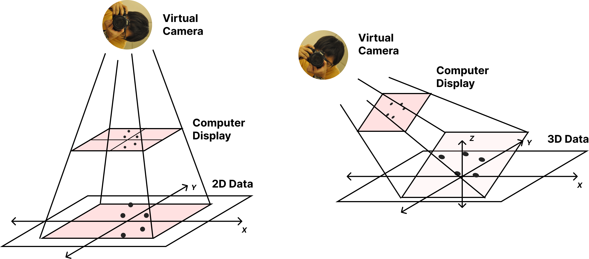How Do These Libraries Work?
These fundamental operations are crucial in other domains beyond just data visualization, such as video games, virtual reality, interactive computer graphics, and 3D CAD tools.

Ryan Kim and Paul M. Torrens. 2024. Building Verisimilitude in VR With High-Fidelity Local Action Models: A Demonstration Supporting Road-Crossing Experiments. In 38th ACM SIGSIM Conference on Principles of Advanced Discrete Simulation (SIGSIM PADS ’24), June 24–26, 2024, Atlanta, GA, USA. ACM, New York, NY, USA, 12 pages. https://doi.org/10.1145/3615979.3656060
Revisiting Algebra: Vectors
Vectors
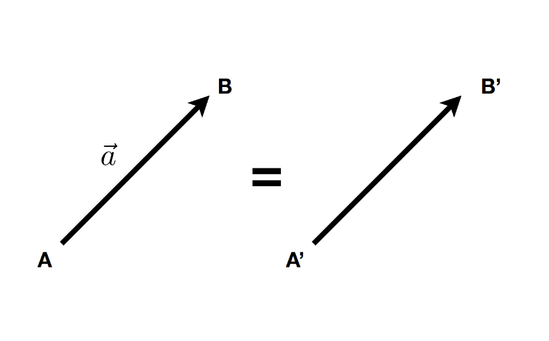
- A vector \(\overrightarrow{(x, y, z, …)}\) describes a direction and a length without a starting point.
- A vector is NOT a pair \({x,y}\), NOR a position \((x,y)\)
\[ \overrightarrow{AB} = B - A \]
- A unit vector is a vector with length = 1 (direction-only)
\[ \hat{a} = \frac{\overrightarrow{a}}{\|\overrightarrow{a}\|} \]
Vector Math
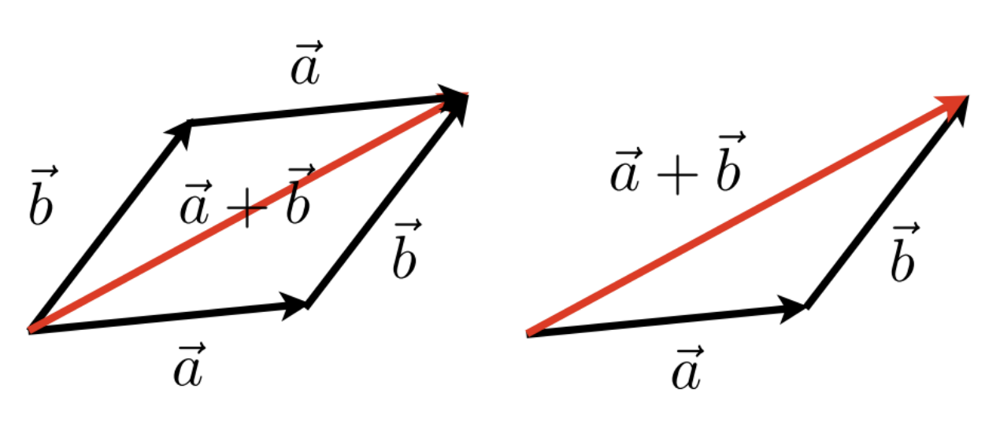
\[ \overrightarrow{a} + \overrightarrow{b} = \overrightarrow{b} + \overrightarrow{a} \]
Dot Product
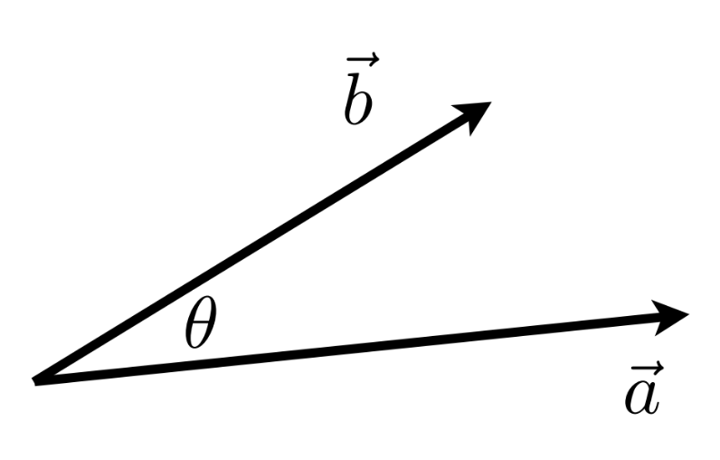
\[ \overrightarrow{a} \cdot \overrightarrow{b} = \|\overrightarrow{a}\|\|\overrightarrow{b}\|\cos{\theta} \]
\[ \cos{\theta} = \frac{\overrightarrow{a} \cdot \overrightarrow{b}}{\|\overrightarrow{a}\|\|\overrightarrow{b}\|} \]
Cross Product

- Orthogonal to two initial vectors
- Direction determined by right-hand rule
- Useful in constructing coordinate systems
Revisiting Algebra: Matrices
\[ \begin{pmatrix} 1 & 2 & 3 \\ 4 & 5 & 6 \end{pmatrix} \]
- Matrix: An array of numbers, with \(N\) rows and \(M\) columns.
Multiplication
- Imagine you want to multiply two matrices: \(A\) (an \(N \times M\) matrix) and \(B\) (an \(M \times P\) matrix) …
- The number of columns in A must MUST = the number rows in B.
- The outcome = an \((M \times P)\) matrix
- \((M \times N) (N \times P) = (M \times P)\)
\[ \begin{pmatrix}a & b \\ c & d\end{pmatrix} \begin{pmatrix}e & f \\ g & h\end{pmatrix} = \begin{pmatrix} ae + bg & af + bh \\ ce + dg & cf + dh \end{pmatrix} \]
Let’s Practice
\[ \begin{pmatrix} 1 & 3 \\ 5 & 2 \\ 0 & 4 \end{pmatrix}\begin{pmatrix}3 & 6 & 9 & 4 \\ 2 & 7 & 8 & 3 \end{pmatrix} = \begin{pmatrix}9 & ? & 33 & 13 \\ 19 & 44 & 61 & 26 \\ 8 & 28 & 32 & ? \end{pmatrix} \]
Keep in Mind:
- Keep in mind that matrix multiplication is:
- Non-commutative (AB and BA are different in general)
- Associative and distributive
- \(A(B+C) = AB + AC\)
- \((A+B)C = AC + BC\)
Matrix-Vector Multiplication
- Treat vector as a column matrix \((m \times 1)\)
\[ \begin{pmatrix}-1 & 0 \\ 0 & 1\end{pmatrix}\begin{pmatrix}x \\ y\end{pmatrix} = \begin{pmatrix}-x \\ y\end{pmatrix} \]
Transformations: Scaling
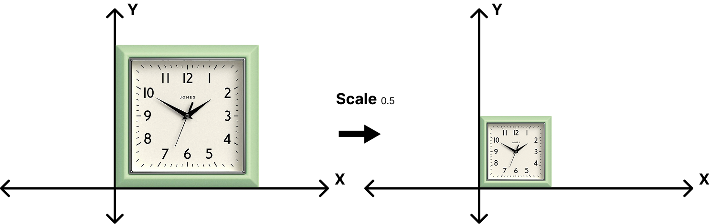\[ \begin{bmatrix}x' \\ y'\end{bmatrix} = \begin{bmatrix}s & 0 \\ 0 & s\end{bmatrix}\begin{bmatrix}x \\ y\end{bmatrix} \]
Transformations: Scaling
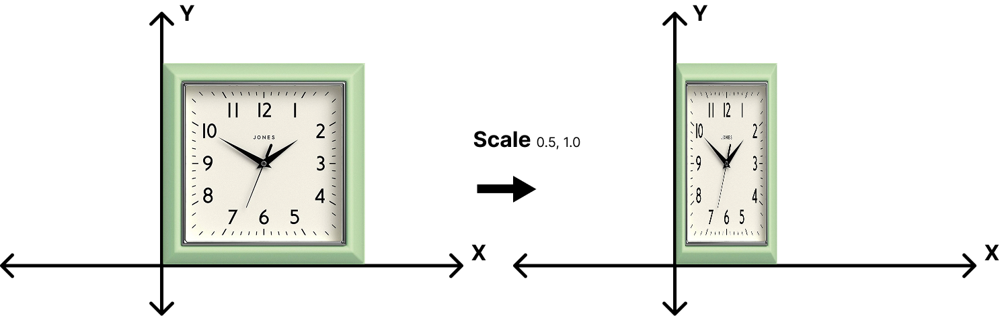\[ \begin{bmatrix}x' \\ y'\end{bmatrix} = \begin{bmatrix}s_x & 0 \\ 0 & s_y\end{bmatrix}\begin{bmatrix}x \\ y\end{bmatrix} \]
Transformations: Reflection
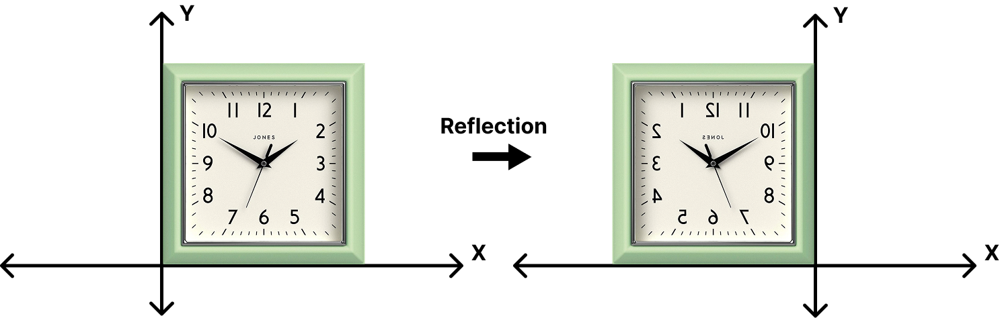\[ \begin{bmatrix}x' \\ y'\end{bmatrix} = \begin{bmatrix}s_x & 0 \\ 0 & s_y\end{bmatrix}\begin{bmatrix}x \\ y\end{bmatrix} \]
Transformations: Reflection
\[ \begin{bmatrix}x' \\ y'\end{bmatrix} = \begin{bmatrix}-1 & 0 \\ 0 & 1\end{bmatrix}\begin{bmatrix}x \\ y\end{bmatrix} \]
Transformations: Rotation
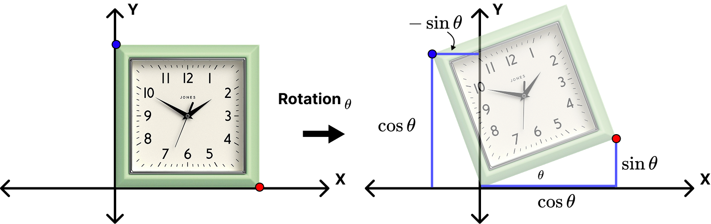\[ R_\theta = \begin{bmatrix}\cos{\theta} & -\sin{\theta} \\ \sin{\theta} & \cos{\theta} \end{bmatrix} \]
Transformations: The Pattern
\[ \begin{bmatrix}x' \\ y'\end{bmatrix} = \begin{bmatrix}a & b \\ c & d\end{bmatrix}\begin{bmatrix}x \\ y\end{bmatrix} \]
\[ x' = Mx \]
We generally try to minimize transformation operations by relying on single transformation matrix \(M\).
Multi-Step Operations
We can perform multiple transformations (e.g. rotation, then scale) in sequence by using multiple \(M\) matrices in sequence. Matrix multiplications occur from right to left and are non-commutative!
\[ \begin{bmatrix}x' \\ y'\end{bmatrix} = \begin{bmatrix}a & b \\ c & d\end{bmatrix} \begin{bmatrix}e & f \\ g & h \end{bmatrix} \begin{bmatrix}x \\ y\end{bmatrix} \]
\[ x' = M_2M_1x \]
Transformations: Translations
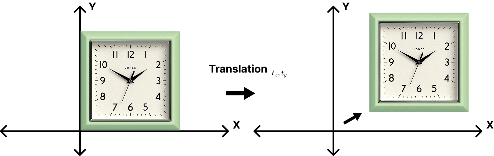\[ \begin{bmatrix}x' \\ y'\end{bmatrix} =\begin{bmatrix}x \\ y\end{bmatrix} + \begin{bmatrix} t_x \\ t_y \end{bmatrix} \]
Translations Don’t Match the Pattern
- Translation cannot be represented in matrix form
\[ \begin{bmatrix}x' \\ y'\end{bmatrix} = \begin{bmatrix}a & b \\ c & d\end{bmatrix} \begin{bmatrix}x \\ y\end{bmatrix} + \begin{bmatrix} t_x \\ t_y \end{bmatrix} \]
- Is there a unified way to represent all transformations?
Solution: Homogeneous Coordinates
- Add a 3rd coordinate (a \(w\)-coordinate)
- 2D Point: \(\begin{bmatrix}x \\ y \\ 1 \end{bmatrix}\)
- 2D Vector: \(\begin{bmatrix}x \\ y \\ 0 \end{bmatrix}\)
- Matrix Operations now in Linear Form
\[ \begin{bmatrix}x' \\ y' \\ w' \end{bmatrix} = \begin{bmatrix} 1 & 0 & t_x \\ 0 & 1 & t_y \\ 0 & 0 & 1 \end{bmatrix} \begin{bmatrix}x \\ y \\ 1 \end{bmatrix} = \begin{bmatrix} x + t_x \\ y + t_y \\ 1 \end{bmatrix} \]
2D Transformations
Scale
\[ S(s_x,s_y)=\begin{bmatrix} s_x & 0 & 0 \\ 0 & s_y & 0 \\ 0 & 0 & 1 \end{bmatrix} \]
Rotation
\[ R(\theta)=\begin{bmatrix} \cos{\theta} & -\sin{\theta} & 0 \\ \sin{\theta} & \cos{\theta} & 0 \\ 0 & 0 & 1 \end{bmatrix} \]
Translation
\[ T(t_x,t_y)=\begin{bmatrix} 1 & 0 & t_x \\ 0 & 1 & t_y \\ 0 & 0 & 1 \end{bmatrix} \]
3D Transformations
We do the same thing that we did with 2D matrices: add another column! This also means that transformations using homogeneous coordinates involves \(4 \times 4\) matrices.
- 3D point: \((x, y, z, 1)^T\)
- 3D vector: \((x, y, z, 0)^T\)
\[ \begin{bmatrix} x' \\ y' \\ z' \\ 1 \end{bmatrix} = \begin{bmatrix} a & b & c & t_x \\ d & e & f & t_y \\ g & h & i & t_z \\ 0 & 0 & 0 & 1 \end{bmatrix} \begin{bmatrix} x \\ y \\ z \\ 1 \end{bmatrix} \]
3D Transformations: Scale and Translation
Scale
\[ S(s_x,s_y,s_z) = \begin{bmatrix} x' \\ y' \\ z' \\ 1 \end{bmatrix} = \begin{bmatrix} s_x & 0 & 0 & 0 \\ 0 & s_y & 0 & 0 \\ 0 & 0 & s_z & 0 \\ 0 & 0 & 0 & 1 \end{bmatrix} \]
Translation
\[ S(s_x,s_y,s_z) = \begin{bmatrix} x' \\ y' \\ z' \\ 1 \end{bmatrix} = \begin{bmatrix} 0 & 0 & 0 & t_x \\ 0 & 0 & 0 & t_y \\ 0 & 0 & 0 & t_z \\ 0 & 0 & 0 & 1 \end{bmatrix} \]
3D Transformations: Rotations
We need to consider 3 axes rather than just a singular axis like in 2D…
\[ R_x(\theta) = \begin{bmatrix} 1 & 0 & 0 & 0 \\ 0 & \cos{\theta} & -\sin{\theta} & 0 \\ 0 & \sin{\theta} & \cos{\theta} & 0 \\ 0 & 0 & 0 & 1 \end{bmatrix} \]
\[ R_y(\theta) = \begin{bmatrix} \cos{\theta} & 0 & \sin{\theta} & 0 \\ 0 & 1 & 0 & 0 \\ -\sin{\theta} & 0 & \cos{\theta} & 0 \\ 0 & 0 & 0 & 1 \end{bmatrix} \]
\[ R_z(\theta) = \begin{bmatrix} \cos{\theta} & -\sin{\theta} & 0 & 0 \\ \sin{\theta} & \cos{\theta} & 0 & 0 \\ 0 & 0 & 1 & 0 \\ 0 & 0 & 0 & 1 \end{bmatrix} \]
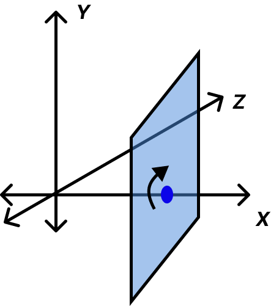
Applications: Model-View-Projection
At its core, the task of rendering 3D data requires a kind of “pipeline” - a series of transformations from one “space” to another, in sequence:
| 1. World Space | 2. View/Camera Space | 4. Projection/Screen Space |
|---|---|---|
| Data points are placed within the 3D “world”. | All points are transformed and are now relative to the camera’s space. | All points are projected onto the 2D screen. |
Model-View-Projection Transformations
- Find a good place to stand (model transformation)
- Find a good “angle” to place the camera (view transformation)
- Cheeese! (projection transformation)
This MODEL-VIEW-PROJECTION operation is instrumental to all graphics libraries, render engines, etc.
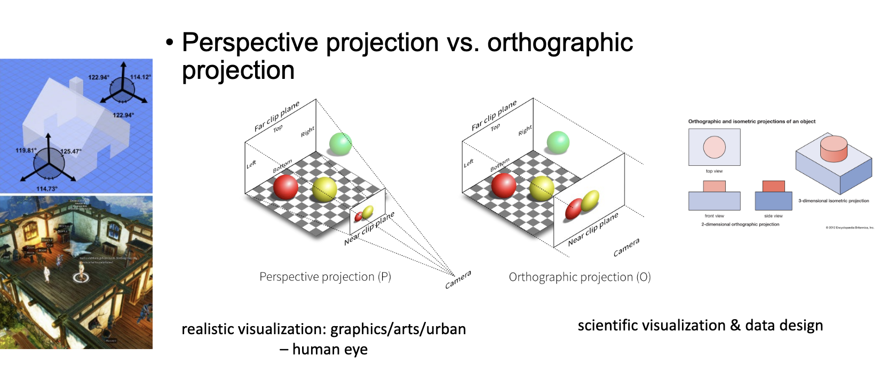